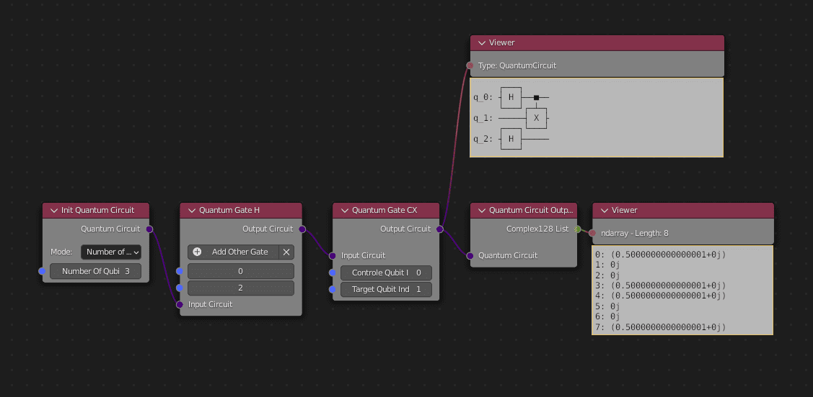
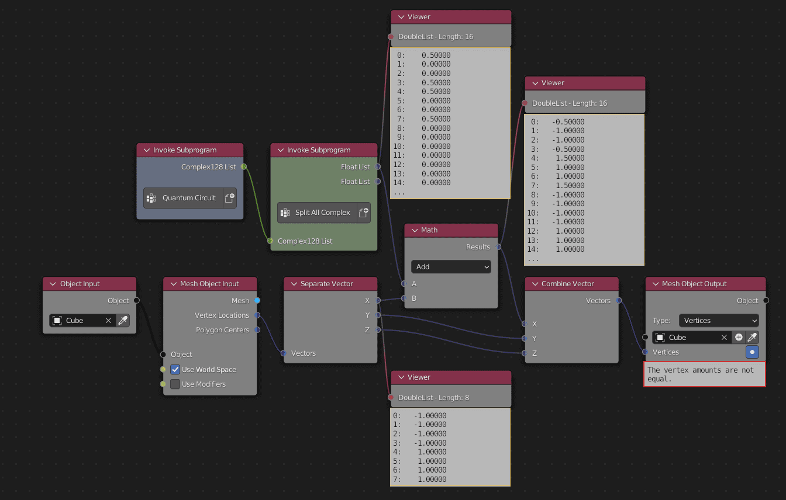

Tutorial 2 - Use a quantum circuit to modify a mesh
In this tutorial, we are going to use results from a quantum circuit to modify a mesh in Blender.
To begin, we are going to modify a cube.
- First, we will create a quantum circuit (if you need help, check the tutorial 1).
1 - Convert quantum result in floats
Here, we want to be able to modify all vertices of the cube, so we will need 8 results, that means we will need 3 qubits (2^3 = 8).
We are only going to use the state-vector of the circuit, so we don't need a classical register.
Let's create the following circuit:
{kind=link}
Here we have the state-vector with probabilities related to qubits.
To send the complex list from the state-vector, we will create a group that contains our circuit and send this list as output.
To do it we use Subprograms options from Animation Nodes.
Let's create the Quantum Circuit group:
{kind=link}
To use complexes, we will need to convert our output into floats.
To do that, Quantum Nodes implements a node Split Complex128 that returns float from the real part and the imaginary part of the complex number.
{kind=link}
{kind=link}
Note
This node only takes one complex at a time, so to convert all of them we will create a loop with Subprograms.
- Create a new node tree and create a loop with an input taking Complex128.
{kind=link}
- Link this node to the node Split complex128.
{kind=link}
- Finally, create two outputs giving the real part and the imaginary part by clicking on New Generator Output in Loop Input and choosing Float List.
{kind=link}
Now we can split all complexes from a list.
2 - Access the mesh vertices
Next we are going to create our main node tree to modify our cube.
- Create a new node tree.
In this one, we will use nodes from Animation Nodes to get vertices from an object and send back all the vertices transformed with our previous trees.
- First, call the object with Object Input and get his vertices with Mesh Object Input.
{kind=link}
To be able to modify vertices from the object, we are going to get all vectors from the vertex locations and separate them to modify the axes independently.
{kind=link}
- Go to the 3D Viewport and create a new cube.
- Use the eyedropper tool from the Object Input node and select the cube. This is how you choose what object the tree and therefore the quantum circuit will be applied to.
{kind=link}
Note
It is really useful to split your Blender workspace in multiple screens as you will often have to move through menus.
To do that, click on a corner of one workspace and slide it. You cn then choose what kind of workspace you want it to be in the dropdown menu at the top.
If you use the Viewer node, you can see the vertex locations of the cube.
For example we can see all floats x from vectors.
{kind=link}
We now have access to the cube vertices.
We can use our quantum circuit and our loop to change them.
3 - Modify vertices
- We use Invoke Subprogram to call our quantum circuit and our loop and link them to get two float lists.
{kind=link}
{kind=link}
We can now change how we want the x, y or z list by using the node Float Math.
For example I can choose to only change the x list by adding the real list and combine a new vector.
{kind=link}
- We need to send our new vector to the cube again by using the Mesh Object Output node and select the type vertices.
{kind=link}
We can see that some vertices from our cube have been moved along the x-axis.
{kind=link}
{kind=link}
You now know how to modify vertices thanks to a quantum circuit, but this way works only if you use the exact number of floats.
Here we use 3 qubits to obtain 8 results, it's perfect for a cube that has 8 vertices.
However, by increasing the number of qubits in the quantum circuit, we will have too many results.
Example if we to change to have 4 qubits:
{kind=link}
4 - Have the perfect number of floats
As we've seen, Qubits give us 2^n results (n number of qubits).
We need to find a way to filter only the number of results we want.
To do that, we are going to create an adapter.
- Create a new node tree and create a new Loop with the Subprograms menu.
In parameters, we will take a float list for the real part of complex numbers.
We will get the float in the list related to the index and repeat the loop until the iteration number is equal to the number of vertices.
{kind=link}
We can use this loop in our main tree with Invoke subprogram.
To use it correctly, we have to input the float list from the quantum circuit and specify the number of iteration with the number of vertices.
{kind=link}
Now, no matter the number of results, we get the correct number of floats to create a new vector.
For example we can replace the Cube by a Sphere with more vertices and it will still work.
Note
We re-implement the new vertices to the same object. If you repeat this node, it will take each time the new vertex locations.
Important
Automatic execution of the node tree is the default on Blender. This means that the node tree is executed as much as possible. As it is CPU intensive, it is recommended to change this option by deselecting Always in the Node Tree tab.